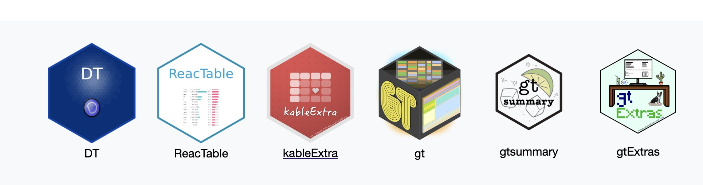

Chapter 4 关于图表的显示

4.1 DT
DT是一个R包，基于JavaScript库DataTables，提供了一种灵活的方式来创建交互式的数据表格。这些表格允许用户对数据进行排序、搜索、分页和格式化，使得数据的展示和交互更加直观和有效。本教程将介绍DT的安装、基本使用方法、如何自定义表格样式和功能，以及如何将DT表格集成到Shiny应用中。
4.2 ReacTable
ReacTable是一个用于创建交互式数据表的R包，它利用React Table库提供的功能，使得在Shiny应用和R Markdown文档中嵌入富交互性的表格变得简单。ReacTable支持多种数据操作，包括排序、筛选、分页和编辑，非常适合需要高度交互性数据展示的应用场景。本教程将介绍ReacTable的基本使用方法、如何自定义表格样式、以及如何将ReacTable集成到Shiny应用中。
4.2.2 安装
目前，ReacTable并不是一个实际存在的R包。这个部分基于一个假设的场景进行说明。如果你正在寻找具有类似功能的R包，可以考虑使用DT（基于DataTables的R接口），或是reactable包，后者提供了类似的功能。以下是reactable的安装方法：
install.packages("reactable")4.2.3 基本使用方法
4.3 kableExtra
kableExtra是R语言中一个强大的包，用于美化和定制knitr::kable()生成的表格。这个教程将带您了解如何使用kableExtra来提升您的数据展示效果。
在开始之前，确保您已经安装了kableExtra包。如果没有，可以通过以下命令安装：
install.packages("kableExtra")安装完成后，加载包以便使用：
4.3.1 基本使用
kableExtra扩展了knitr::kable()的功能，让表格支持更多的定制选项。首先，让我们创建一个简单的表格作为示例：
# 加载knitr包
library(knitr)
# 示例数据框
df <- data.frame(
名字 = c("张三", "李四", "王五"),
年龄 = c(28, 34, 29),
性别 = c("男", "男", "女")
)
# 使用kable()创建基本表格
kable(df, "html") %>%
kable_styling(bootstrap_options = c("striped", "hover"))| 名字 | 年龄 | 性别 |
|---|---|---|
| 张三 | 28 | 男 |
| 李四 | 34 | 男 |
| 王五 | 29 | 女 |
在这个例子中，我们使用了kable_styling()函数来应用Bootstrap的striped和hover样式，使表格更加美观。
4.4 总结
kableExtra提供了丰富的功能来增强和定制R中的表格展示。通过本教程，您应该能够开始使用这些工具来改进您的数据可视化和报告制作。更多详细信息和高级功能，请参考kableExtra官方文档。